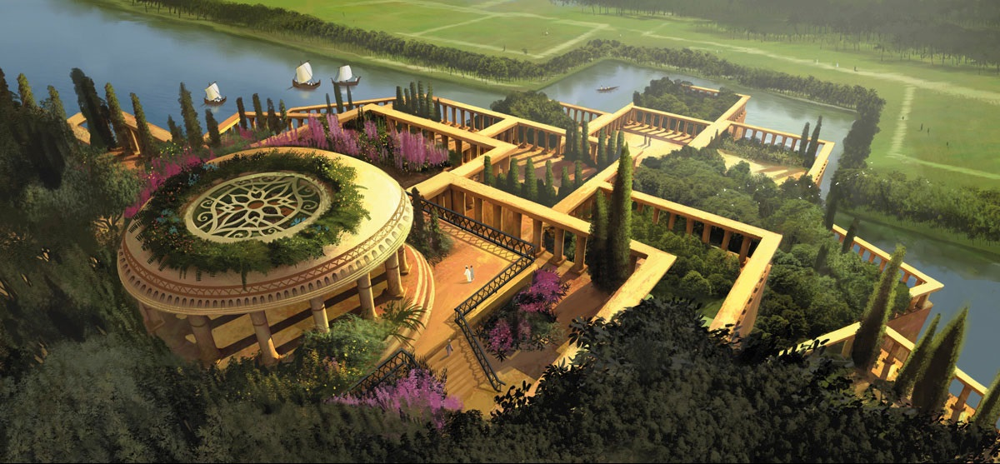

|
Grădinile suspendate din Babilon

Grădinile suspendate din Babilon
Grădinile suspendate din Babilon, au fost construite de regele Nabucodonosor al II-lea (605-562 î.Hr.) pentru una din soţiile sale, Amytis (Amuhea). Ele figurau în antichitate printre cele şapte minuni ale lumii antice. După o veche legendă, răspândită în special de scriitorii greci, ar avea o origine mult anterioară: ele ar fi fost construite de regele Ninus întemeietorul oraşelor Ninive şi Babilon, pentru soţia sa Semiramida (Semiramis). După informaţiile istoricului Diodor din Sicilia, uriaşele grădini ocupau o suprafaţă de 15000 m² şi se ridicau în patru terase până la 77 metri înălţime. Pe terase erau plantaţi arbori din mai multe specii, unii dintre ei fiind înalţi de 24 metri. Erau udaţi de pompe cilindrice, al căror secret nu se cunoaşte încă. Sub terase, sprijinite pe mai multe coloane, se găseau camere răcoroase pentru familia regală. După unele relatări, se pare că vestitele grădini au fost dărâmate de perşi, în timpul ocupării Babilonului, tot atunci fiind dărâmat şi Turnul Babel.
Cadrul geografic şi evoluţia istorică
Construcţia grădinilor suspendate din Babilon trebuie apreciată prin prisma încadrării lor în mediul înconjurător: clima caldă şi uscată, peisajul arid şi obiceiurile vechilor locuitori ai Mesopotamiei. La popoarele orientale din antichitate, noţiunea de grădină era legată de ideea supremei fericiri omeneşti. Această mentalitate a făcut pe vechii perşi să numească grădinile lor "raiuri".
Aşezat pe fluviul Eufrat, vechiul Babilon îşi pierde originea în negura vremurilor. După vechi legende, el ar fi fost întemeiat fie de către legendarul Nimrod, fie de către zeul Baal, fie de regele Ninus, soţul miticei regine Semiramida. După o perioadă zbuciumată, marcată de rivalităţile şi războaiele cu asirienii, Babilonul reuşeşte pe la sfârşitul secolului al VII-lea î.Hr. să-şi consolideze hegemonia. Conducător al statului a fost ales Nabopalassar (626-605 î.Ch.), fondator al dinastiei caldeene. Fiul şi urmaşul acestuia, Nabucodonosor al II-lea (605-562 î.Hr.), reface oraşul, întărind fortificaţiile şi construind palate, ele înseşi fortificate. ţinând seama de structura religiei babiloniene, rolul predominant îl aveau preoţii, conferind statului un regim teocratic.
×

|